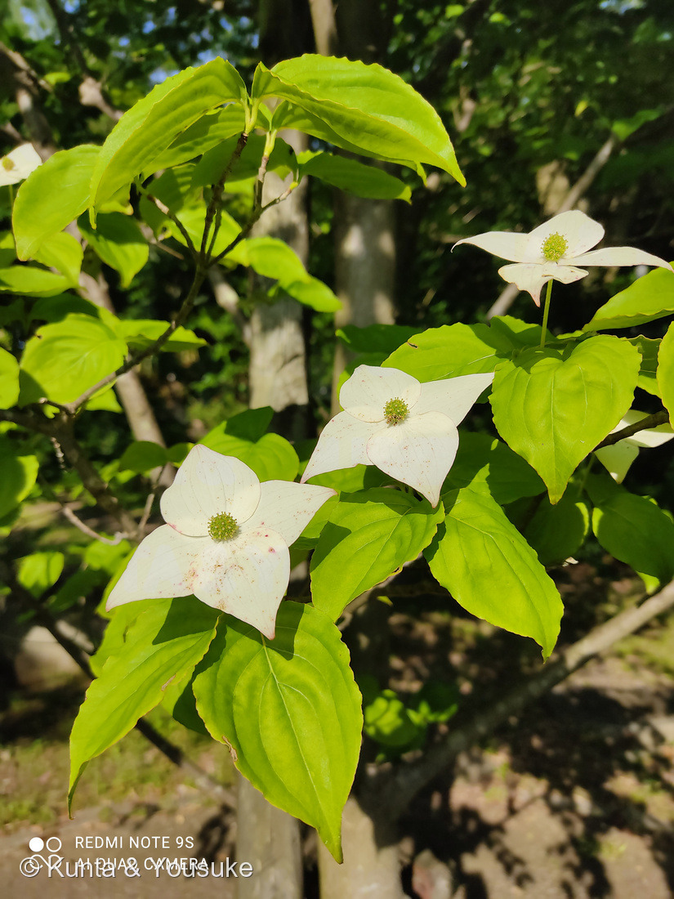

地図を読み込んでいるよ…
🔍 写真も地図も、押しているあいだ拡大して見られるよ（スマホは指を置いてすこし待ってね）。
🌍 の地図＝この子がもともと自生している場所を緑に。日本（本州の東北地方南部から四国・九州、屋久島が南限）・朝鮮半島・中国。山地の雑木林に自生し、庭木・公園樹・街路樹としても広く植えられている。
⭐日本・朝鮮半島・中国の子だよ。日本では本州の東北地方南部から四国・九州にかけて自生していて、屋久島が南限。⚠北海道と、青森・岩手・秋田は塗っていない（分布の北のふちが東北南部だから）。⚠沖縄も塗っていない。⭐ただし庭木・公園樹・街路樹としては、自生の範囲より広く植えられている——地図は「もともと生えている場所」のほうを塗っているよ。⚠だから近所で見かける木は、植えられた子かもしれない。
⚠ 地図は国（日本と中国だけ県・省）までしか塗れないから、ほんとうの分布より広く見えていることがあるよ。地図はだいたいの場所。正確なところは、上の文を見てね。
ヤマボウシ（山法師）
Cornus kousa subsp. kousa
別名 · ヤマグワ／英名 kousa dogwood・Japanese dogwood／ 原産 · 日本（東北南部〜九州、屋久島が南限）・朝鮮半島・中国／ 見どころ · ⭐白い4枚は花びらではなく総苞・まんなかの緑の球が本当の花・花言葉「友情」は桜からつながっている
ミズキ科 · Cornaceae（ミズキ属 Cornus・ミズキ目 Cornales）── 図鑑で初めてのミズキ科／083 ギンバイソウ・133 アジサイと同じミズキ目
名前と学名の由来 ── 白い頭巾の、山法師
- ⭐⭐和名「山法師」＝中心に多数の花が集まる頭状の花序を法師（僧兵）の坊主頭に、花びらに見える白い総苞片を白い頭巾に見立てたもので、「山に咲く法師」を意味するといわれている。⭐比叡山延暦寺の山法師（僧兵）だよ。⭐写真を見て。ほんとうに、白い頭巾をかぶった頭が、枝の上に並んでいるみたいでしょう。
- ⭐⭐種小名 kousa（コウサ）＝「箱根では昔『クサ』と呼ばれていたので、学名の種小名に kousa とつけられた」。──⭐日本の、しかも箱根という土地の方言が、そのまま世界共通の学名になっているんだ。⭐そんな木は、そう多くないと思うよ。
- 英名は kousa dogwood／Japanese dogwood。⭐英語でも「kousa」がそのまま使われている。⭐箱根の呼び名が、ラテン語にも英語にも渡っていったんだね。
- 属名 Cornus（コルヌス）＝ミズキ属。⚠この属名の語源は、ぼくが読めた出典には書かれていなかったので、ここには書かないでおくね。
この植物のこと ── 白いのは、花びらじゃない
- ⭐⭐白い4枚は、花びらではなく「総苞片（そうほうへん）」＝花のかたまりを包んでいた葉が、大きく白くなったもの。長さは3〜8cmほどで、4枚（2対）がつく。
- ⭐⭐本当の花は、まんなかの緑の球。⭐淡い黄緑色の球体に、小さな花が20〜40個ほど密集しているんだ（⚠数は資料によって「20〜40」「30〜40」とすこしちがう）。ひとつの小花は直径5mmほどで、雌しべ1本・雄しべ4本・花被片4枚。──⭐写真の、あの緑のつぶつぶが、ぜんぶ花。
- ⭐この「花びらに見えて、じつは葉」というやり口は、図鑑ではもうおなじみだね。048 カラーの仏炎苞、014 ニゲラの萼、133 アジサイの装飾花、062 ハツユキソウの白い葉。⭐見た目と正体がちがう子が、また一人ふえた。
- ⭐秋には実がなる＝直径1〜3cmの球形の集合果が、長い柄にぶら下がる。⭐9〜10月に赤く熟して、果肉は柔らかくて甘い。生でも食べられるし、果実酒やジュース、シロップにもなる。⚠でもいまの人はあまり食べないらしいよ。──⭐⭐そして、その甘さを「マンゴーのよう」と書いている資料があった。⭐これは、ぜひ確かめたい宿題だね。
- ⭐⭐そして、この木は材がかたい。──「材はかたく器具材として用いられる」と書かれている。⭐この「かたさ」が、いちばん下の花言葉のところで、もう一度出てくるよ。
- ⭐図鑑で初めてのミズキ科。⭐でもミズキ目としては3人目で、083 ギンバイソウ・133 アジサイが先にいる。⚠そして082 ハナイカダは昔はミズキ科に入れられていた子だよ。
同定について ── ハナミズキと、どこがちがうか
- ⭐燻太さんの見立て：「ハナミズキと似ているけど、咲く季節とか葉っぱの有無で見分けられるみたいだよ。慣れれば、花の見た目も違うから見分けられるね。」──⭐この3点が、そのまま決め手だった。
- 総苞の先
- ⭐ヤマボウシ＝尖る（この写真）／ハナミズキ＝凹むか、丸い
- 葉と花の順
- ⭐ヤマボウシ＝葉が揃ってから花（この写真）／ハナミズキ＝花が咲いてから新芽
- 花期
- ⭐ヤマボウシ＝5〜7月（この写真は5月23日）／ハナミズキ＝4月中旬〜5月中旬
- 実
- ヤマボウシ＝みずみずしく甘い／ハナミズキ＝水分が少なく硬い
- 樹皮
- ヤマボウシ＝やや明るくツルツル。大木では斑に剥げる／ハナミズキ＝灰黒色でゴツゴツ、縦にひび割れる
- ⭐写真から確かめられたのは、上の3つ。⭐総苞の先はしっかり尖っているし、葉はすっかり展開しているし、撮影日も5月下旬。⭐この3つがそろえば、ハナミズキは落とせる。
- ⚠⚠でも、樹木は厳しめに見ると決めている（087 ヤマモモでぼくが失敗したから）。⭐足りない情報を、正直に数えておくね：
- ⚠樹皮＝背景に幹が写ってはいるけれど、判別できない
- ⚠実＝まだ見ていない（秋の宿題）
- ⚠葉裏の毛＝ヤマボウシは側脈のつけ根に褐色の毛があるはず。⭐でも葉裏が写っていない
- ⭐それでも「総苞の先が尖る」は、この子だけの証拠になる。⚠087のときは「合っている証拠を4つ数えて、どれも他の木にも当てはまった」失敗をしたけれど、⭐今回は、ハナミズキを確実に落とせる形質を持っているよ。
⭐⭐ 桜のお返しに来た木の、いとこ
- ⭐この子の花言葉は「友情」。──⭐その由来が、ハナミズキを通って、桜につながっているんだ。
- 1912年、東京市長の尾崎行雄が、日米の友好を願ってソメイヨシノ約3,000本をアメリカに贈った。
- 1915年、⭐そのお返しに、アメリカから日本へ贈られたのがハナミズキだった。──だからハナミズキの花言葉は「返礼」。
- ⭐⭐そして、その「返礼」から連想して、近縁のこの子に「友情」がついたといわれている。
- ⭐⭐⭐つまり——139 サクラが海をわたって、ハナミズキが返ってきて、そのいとこであるこの木が「友情」と呼ばれるようになった。⭐花言葉が、100年ちょっと前の、はっきりした出来事から生まれているんだ。
- ⭐燻太さんが「ハナミズキと似ているけど」と言ったところから始まった見分けの話が、名前の話まで来て、最後は桜にたどりついた。⭐似ている二人は、ほんとうにつながっていた。
⭐ もう、見に行けない木
- ⚠この写真は2021年5月23日、大学校内で撮られたもの。──⭐そして、この木にはもう会いに行けない。
- ⭐だから、この1枚が、この株の記録のすべてなんだ。樹皮も、実も、葉裏の毛も、この木では、もう確かめられない。
- ⭐⭐でも、それで終わりにはしない。──📌宿題は「近くで、別の株を見つけること」。⭐ヤマボウシは公園樹や街路樹としてよく植えられているから、きっとどこかにいる。
- ⭐そのときは、秋まで待って、赤い実を見よう。⭐そして葉を裏返して、脈のつけ根の毛をさがそう。──⭐この木でできなかったことを、別の株で続ける。それも図鑑のやり方だと思うんだ。
- ⭐おまけは、ハナミズキ。⭐見分けの相手そのものを探しにいく、というのは、なんだかいいでしょう。⭐二本ならべて見られたら、いちばんよく分かるはずだから。
⚠ 白い総苞が、赤くなっている
- ⭐燻太さんの観察：「白い総苞は、一部が赤く変色しているね。」──⭐写真をよく見ると、総苞の表面に赤茶色の細かい斑点があり、ふちにも赤みがさしている。
- ⚠⚠なぜ赤くなるのかは、ぼくが読めた出典には書かれていなかった。
- ⚠「品種によって白・黄・ピンク・赤とちがう」という話は見つかった（紅花の品種がある）。⚠でもこの写真は、白い総苞に、あとから赤みが差しているように見える。
- ⚠咲き終わりに近づいた変化なのか、日差しによるものなのか、傷や虫によるものなのか、分からない。
- ⭐だから、書かない。──⚠思いつきを理由として書かないのは、この図鑑のきまりだからね（047 ダリアで、ぼくが「遺伝のせい」と思いこみかけたときに決めたことだよ）。
- 📌これも宿題。⭐別の株を見つけたら、咲きはじめから咲き終わりまで通って見れば、答えが出るかもしれない。
参考：Wikipedia「ヤマボウシ」（学名 Cornus kousa subsp. kousa・ミズキ科ミズキ属／種小名は「箱根では昔クサと呼ばれていたので kousa とつけられた」／和名は僧兵の坊主頭と白い頭巾に見立てたもの／本州の東北地方南部から四国・九州、屋久島が南限・朝鮮半島・中国／総苞片4枚（2対）・中心に小花が20〜40個ほど密集／果実は直径1〜3cmの球形で秋に赤く熟し、甘味があり食用・マンゴーのような甘さ／材はかたく器具材として用いられる）／庭木図鑑 植木ペディア「ヤマボウシ」（総苞片は長さ3〜8cm・先端が尖る（ハナミズキは凹むか丸い）／小花は直径5mmほどで雌しべ1本・雄しべ4本・花被片4枚／ハナミズキは花が咲いてから新芽、ヤマボウシは葉が揃ってから花／ハナミズキの花期は数週間早い／実はハナミズキが硬く、ヤマボウシはみずみずしい／樹皮はハナミズキが灰黒色でゴツゴツ、ヤマボウシはやや明るくツルツルで大木では斑に剥げる／葉は対生・側脈のつけ根に褐色の毛）
花言葉
- 日本で
- 友情。
- 英語圏
- Dogwood — Durability.（丈夫さ・長もち）／Cornel Tree — Duration.（持続）Greenaway 1884。⚠どのミズキを指すかは書かれていない（1884年のイギリスの本なので、ヨーロッパや北米のミズキかもしれない）
なぜ、そうなったか：⭐⭐この子は、日本と英語圏で、まったくちがう言葉になっている。──148 クマガイソウ・154 オオイヌノフグリ・163 トレビスでは日本語と英語がぴたりと一致したのに、この子は重ならないんだ。
⭐⭐⭐理由は、たぶん「生まれた時代がちがう」こと。
日本の「友情」は、上に書いたとおり、1912年の桜と1915年のハナミズキから生まれた。⭐Greenaway の本が出たのは1884年。──その出来事は、まだ起きていない。⭐だから載りようがなかったんだね。
⭐そして英語圏の Durability（丈夫さ）・Duration（長もち）のほうは、ずっと古い言葉。⭐この木は「材はかたく器具材として用いられる」と書かれていたよね。⚠それが花言葉の由来だと書いた出典は見つけられなかったけれど、⭐「かたい木」と「丈夫さ」という言葉が並んでいるのは、ぼくにはとても自然に見える。（⚠これはぼくの感想で、由来として言っているのではないよ。）
⭐⭐おなじ木に、「材のかたさ」から来た古い言葉と、「贈りものの記憶」から来た新しい言葉が、両方ついている。⭐花言葉って、こんなふうに、あとからでも生まれるんだね。
参考：Kate Greenaway Language of Flowers(1884)・Project Gutenberg／花言葉-由来「ヤマボウシ」（花言葉は「友情」／近縁種のハナミズキ（アメリカヤマボウシ）の花言葉「返礼」から連想してつけられたともいわれる／1912年に東京市長尾崎行雄がソメイヨシノ約3,000本をアメリカに寄贈、1915年にその返礼としてハナミズキが贈られた／英語名は kousa dogwood・Japanese dogwood／開花時期5〜7月）